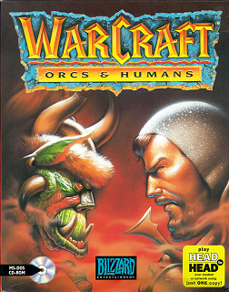

Strategy · 1994
Warcraft: Orcs & Humans
Blizzard's first war machine: Dune II with fantasy and a modem cable.

Cover: Wikipedia: Warcraft: Orcs & Humans
Facts
- Released
- 1994-11-15
- Genre
- RTS
- Category
- Strategy
- Platforms
- PC
- Developers
- Blizzard Entertainment
- Publishers
- Blizzard Entertainment, Interplay Entertainment